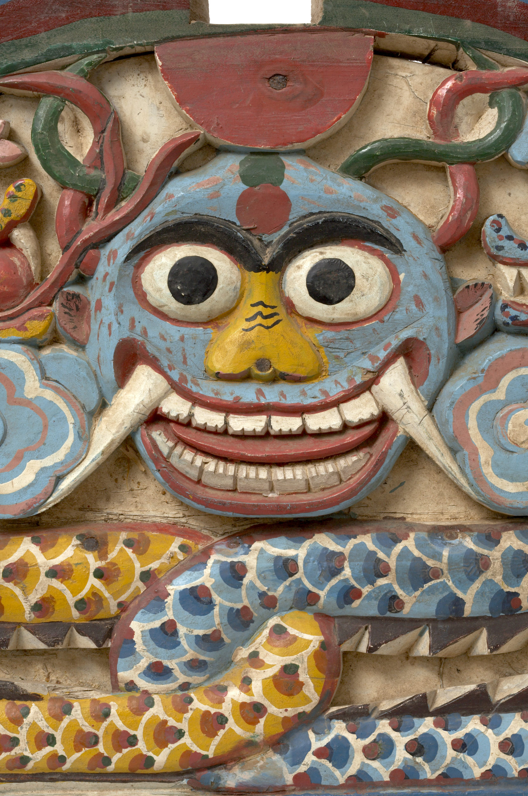

꼭두 소개
꼭두는 힘든 길을 가고 있는 이와
동행하는 존재이자, 그와 함께 즐거움 및
고통을 나누고 있는 존재이다.
이승과 저승, 현실과 꿈 사이를 오고
가는 존재인 꼭두는 천사나 신선처럼
일상과 비일상의 세계를 넘나들면서,
괴로워하거나 슬픔에 잠긴 이를 위로하고
지켜주는 일을 한다.

안내하기
낯설고 험한 길을 갈 때 몸은 피곤하고, 마음은 불안하다. 길을 잃고 헤매게 된다면 더욱 그렇다. 꼭두는 어두운 저승길에서 등불을 밝혀 망자에게 길을 안내해 주는 역할을 한다. 안내하는 꼭두는 대부분 역동적인 분위기를 띠며, 용이나 봉황 같은 상상의 존재와 더불어 나타나는 경우가 많다.